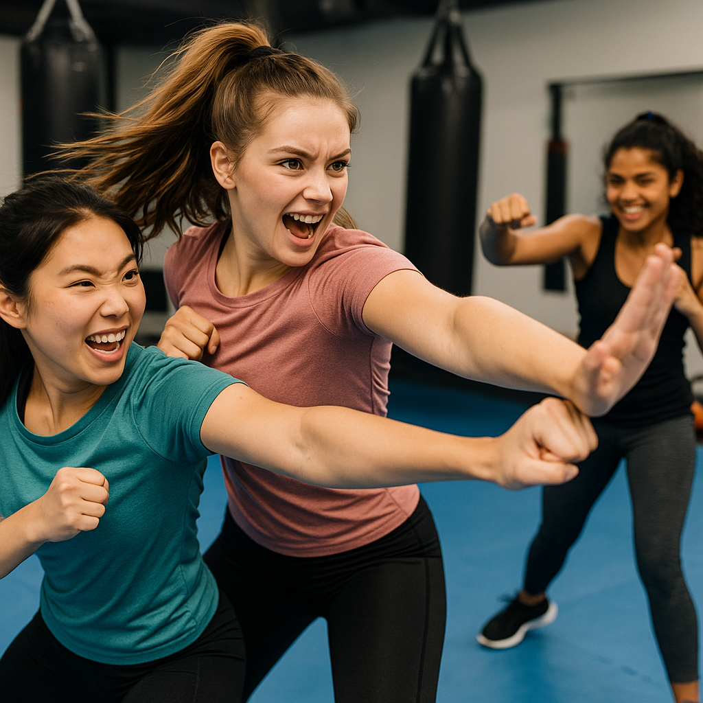
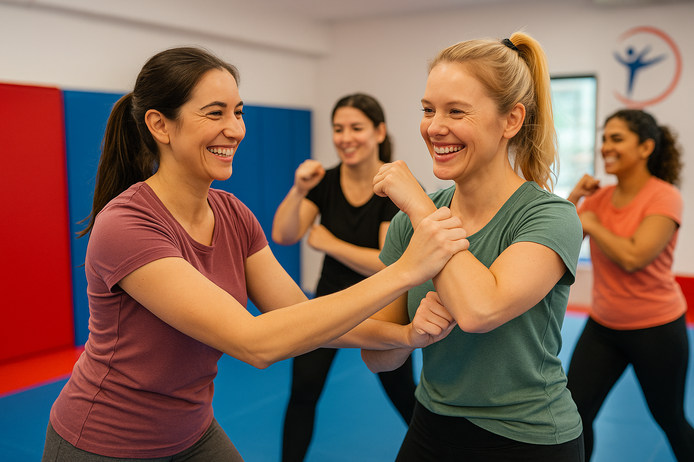

Moov'Ados
À l’adolescence, il n’est pas toujours facile de trouver du temps pour soi. Entre les cours, les devoirs, les écrans et la vie sociale, l’activité physique passe souvent au second plan. Pourtant, cette période est cruciale pour le développement physique et psychologique.
Le cours Moov’ Ados répond aux besoins spécifiques de cette tranche d’âge (10–20 ans) en leur proposant un entraînement complet et ludique, basé sur les principes Jeunesse & Sport : mobilité, agilité, coordination, force fonctionnelle et esprit d’équipe. Ce programme aide à canaliser leur énergie, améliorer leur posture et leur endurance, tout en contribuant à leur santé mentale et à leur estime de soi.
La seconde partie du cours est consacrée à la self-défense, adaptée aux adolescents. Elle leur permet d’apprendre à réagir dans des situations potentiellement dangereuses, à poser des limites et à s’affirmer face aux autres. Ce travail leur apporte confiance en eux, assurance dans leur posture et les aide à mieux faire face aux pressions de la société.
Le cours favorise également la cohésion, le respect et la solidarité entre participants. Les groupes sont généralement mixtes et limités à 20 personnes, avec la possibilité de les séparer en deux (14–18 et 18+) si le nombre le permet.


Moov'Adultes
Pour beaucoup d’adultes, la routine quotidienne laisse peu de place à la santé physique et mentale. Entre un emploi souvent sédentaire et des responsabilités familiales, il est facile d’oublier de s’occuper de soi. Pourtant, bouger régulièrement est essentiel pour prévenir les maladies cardiovasculaires, le stress, la prise de poids et les douleurs musculo-squelettiques.
Le cours Moov’ Adultes est conçu pour répondre à ces enjeux. Dans une ambiance conviviale et motivante, nous proposons un entraînement complet : mobilité, renforcement musculaire, amélioration de la condition physique générale et travail d’endurance. Ce moment devient une parenthèse dans le quotidien pour se recentrer sur son corps, sa santé et son bien-être.
La seconde partie du cours est dédiée à la self-défense, spécifiquement pensée pour les adultes et en particulier pour les femmes, majoritaires dans nos groupes. Selon des études, connaître même quelques techniques simples de défense permettrait de réduire de moitié le risque d’agression et d’augmenter considérablement la confiance en soi.
Ces exercices leur donnent les outils nécessaires pour se protéger efficacement, développer leur assurance et renforcer leur posture face à des situations de conflit ou de danger.
Le groupe est limité à environ 20 personnes pour garantir un suivi attentif. Si le nombre le permet, il peut être scindé en sous-groupes selon les niveaux ou les besoins spécifiques.

